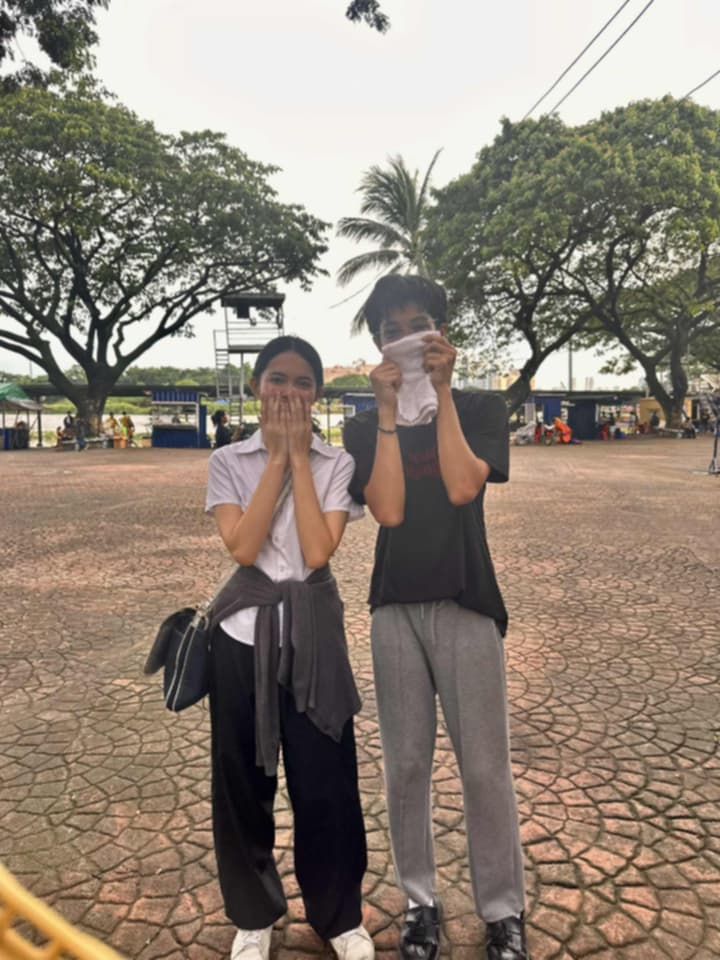
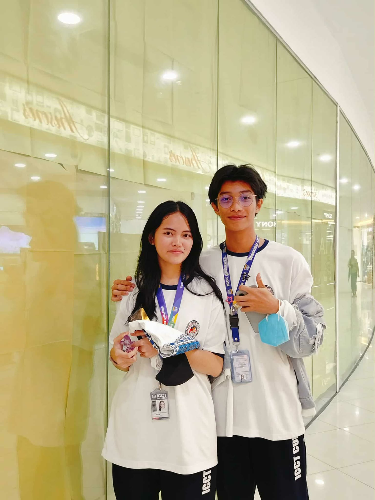
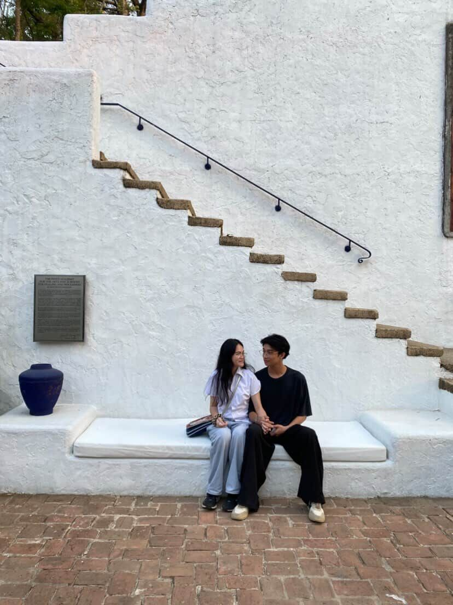
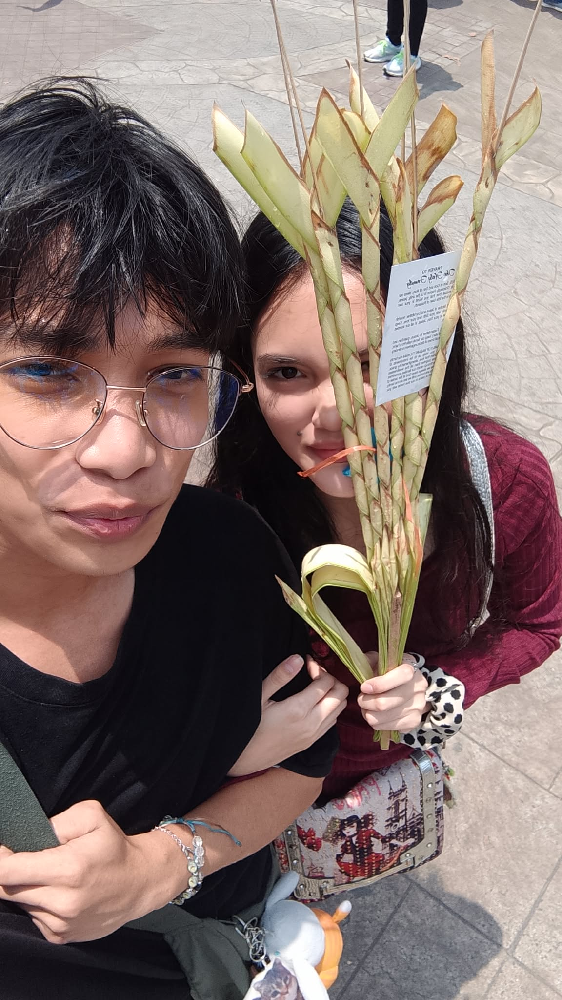
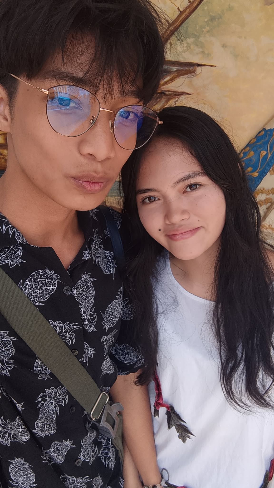
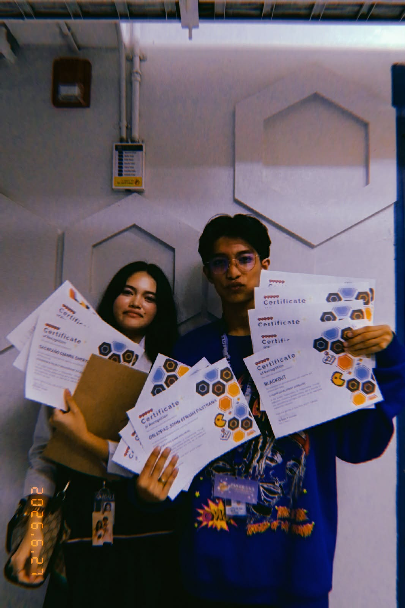
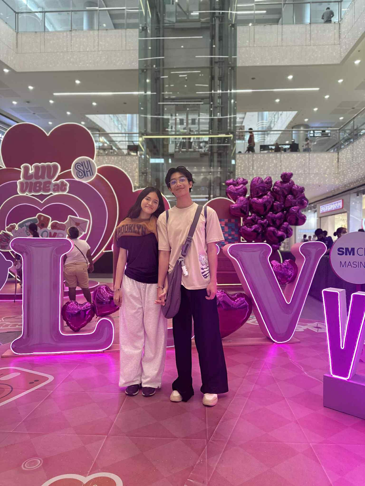

The Memory Museum
A Whole Year With You
Each moment is a treasure, each memory a gift.
Rai
John Efraim Pastrana
Birthday: January 13, 2007
Yanyan
Dianne Sheryl Mae Sacapaño
Birthday: August 5, 2007
The Memory Museum
Each moment is a treasure, each memory a gift.
John Efraim Pastrana
Birthday: January 13, 2007
Dianne Sheryl Mae Sacapaño
Birthday: August 5, 2007
A Whole Year With You
Visited 1 of 12

At first, I was unsure about you, kasi malay mo infatuated ka lang sakin that time. But at the same time, I was hoping na you'd love me for real. I was hoping na you're capable of understanding me and hinding-hindi ka mapapagod sakin. I was praying every night na sana ikaw na, kasi kung hindi ikaw... hindi ko na alam kung sino pa.
.jpg)
The moment you said yes to me, my life suddenly became more beautiful and worth living. I was grateful because you finally accepted me. I was crying through that message you sent, and I thought to myself na lahat ng paghihirap ko ay worth it. Parang lahat ng prayers ko unti-unting sinagot, and for the first time, I felt like I finally had a chance to love someone who might love me just as deeply.

March came, and I slowly started realizing how beautiful it was to have you in my life. Every little conversation, every good morning, every good night, and every moment na nakakausap kita became something I looked forward to. You didn't have to do anything grand to make me happy, kasi kahit simpleng message mo lang, kaya mo nang baguhin yung buong araw ko. I started learning more about you, and the more I got to know you, the more I realized na hindi lang pala kita gusto. I was genuinely falling in love with the person you are.
.jpg)
By April, I was becoming more comfortable with you. Unti-unti kong ipinakita yung mga sides ko na hindi ko basta-basta pinapakita sa ibang tao. My weaknesses, my fears, my overthinking, and even the parts of myself na minsan nahihirapan akong tanggapin. I was scared that you might see me differently, pero deep inside, I wanted you to know the real me. Kasi I didn't want you to love only the good parts of me. I wanted you to know me completely, and I hoped that even after seeing my flaws, you'd still choose to stay.
May made me appreciate you in ways I couldn't fully explain. I started noticing how the smallest things about you could make me smile, how your presence could calm my thoughts, and how hearing from you could make even an ordinary day feel special. Minsan napapaisip ako kung anong ginawa ko para maging deserving sa love mo. I'm not perfect, and I know I still have so much to learn, pero I promise that I'll keep trying. I want to be someone who makes you feel loved, appreciated, and safe, just as you've made me feel those things.

June reminded me that love isn't always about butterflies and happy moments. Sometimes, it's about understanding each other when things get difficult, choosing patience when emotions get heavy, and learning how to communicate even when it's not easy. I know there will be times na hindi tayo magkakaintindihan, and there will be moments when our feelings might overwhelm us. But I want you to know that I'm willing to learn with you. I don't expect us to be perfect. I just hope that whenever life gets hard, we remember why we chose each other in the first place.

By July, I realized that loving you was becoming more than just a feeling. It was becoming a decision that I wanted to make every day. I wanted to know how your day went, what made you happy, what made you sad, and what was bothering you even when you couldn't find the right words to explain it. I wanted to be there not only when you're smiling, but also when you're tired of everything. I want to be the person you can run to when the world feels too heavy, someone who listens without judging and loves you without making you feel like you have to earn it.

August made me think about how far we've come and how much more I still want to experience with you. Ang dami ko pang gustong gawin kasama ka, ang dami ko pang gustong malaman tungkol sayo, at ang dami ko pang memories na gustong buuin with you. I want to experience ordinary days with you, too, not just the special ones. Yung simpleng magkausap tayo, magkwentuhan tungkol sa araw natin, tumawa sa mga bagay na tayo lang ang nakakaintindi, and just enjoy each other's presence. Because honestly, I don't need every day to be extraordinary. If I get to spend it with you, even the simplest moments can become my favorite memories.

September reminded me how much you mean to me. There are times when I overthink, when I become scared of losing you, or when I wonder if I'm loving you the right way. Sometimes, my fears get louder than my confidence, and I'm sorry for the moments when those fears affect us. But please know that behind all my worries is someone who genuinely loves you and wants to grow with you. I don't want my insecurities to become the reason we hurt each other. I want to become better, not just for you, but for myself and for the relationship we're building together. You deserve a love that brings you peace, and I want to keep learning how to give you that.
October makes me look back at the beginning, at the version of me who was still unsure if someone like you could genuinely love someone like me. If I could talk to that version of myself, I'd tell him not to be so afraid. I'd tell him that one day, the person he's praying for will become someone he gets to call his love. And now that I have you, I understand that love isn't just about finally getting the person you've been wishing for. It's about taking care of what you've been blessed with. I don't want to take you for granted, Yanyan. I want to keep choosing you, appreciating you, and reminding you that you're loved, even on the days when you find it difficult to believe it yourself.
As November comes, I find myself becoming more grateful for every moment we've shared. Looking back, I realize that our story isn't made beautiful by perfect circumstances, but by the little moments that became meaningful because we experienced them together. Thank you for accepting me, for allowing me to become part of your life, and for giving me the chance to love you. Thank you for the memories we've made and the lessons we've learned along the way. I know I still have so much to improve about myself, and I know that love requires more than promises. It requires effort, understanding, honesty, and consistency. And I want to show you through my actions that my love for you is something you can trust.

And finally, December. If someone asked me what the most beautiful part of this year was, I wouldn't hesitate to say that it was meeting you, loving you, and being given the opportunity to share a part of my life with you. From the boy who was once praying na sana ikaw na, to the boy who now gets to look back at all these memories with you, I can honestly say that you became one of the most meaningful parts of my life. I don't know everything that the future holds for us, and I can't promise that every day will be easy. But I can promise that I'll keep doing my best to love you with sincerity, to understand you with patience, and to grow alongside you.
Yanyan, if I could go back to January and experience everything all over again, knowing all the things we'd go through, I'd still choose you. I'd still take the risk, still pray for you, still wait for you, and still hope that one day, you'd become the person I get to share my love with.
Because this year wasn't just about twelve months passing by. It was about twelve months of learning what it means to love you, twelve months of memories that I'll carry in my heart, and twelve months of realizing that sometimes, the person you've been praying for becomes the answer you never want to stop being grateful for.
And if I could ask for one more thing, it wouldn't be a perfect year, a perfect relationship, or a life without problems.
It would simply be more time with you.
More mornings to greet you, more nights to remind you that I love you, more memories to create, more lessons to learn, more problems to overcome together, and more chances to make you feel the love that I've been trying to give you since the very beginning.
Thank you for being part of my year, my love. Thank you for being Yanyan, the person who made my days a little brighter and my world a little more beautiful.
And no matter how many pages our story has left to write, I hope you know that I'm still here, still learning, still growing, and still choosing you.
One year, twelve months, countless memories, and one heart that continues to choose you.